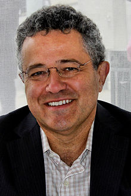

True Crimes and Misdemeanors
From CNN chief legal analyst and bestselling author Jeffrey Toobin, a real-life legal thriller about the prosecutors and congressional investigators pursuing the truth about Donald Trump’s complicity in several crimes–and why they failed.
Donald Trump’s campaign chairman went to jail. So did his personal lawyer. His long-time political consigliere was convicted of serious federal crimes, and his national security advisor pled guilty to others. Several Russian spies were indicted in absentia. Career intelligence agents and military officers were alarmed enough by the president’s actions that they alerted senior government officials and ignited the impeachment process.
Yet despite all this, a years-long inquiry led by special counsel Robert Mueller, and the third impeachment of a president in American history, Donald Trump survived to run for re-election. Why?
Jeffrey Toobin’s highly entertaining definitive account of the Mueller investigation and the impeachment of the president takes readers behind the scenes of the epic legal and political struggle to call Trump to account for his misdeeds. With his superb storytelling and analytic skills Toobin recounts all the mind-boggling twists and turns in the case–Trump’s son met with a Russian operative promising Kremlin support! Trump paid a porn star $130,000 to hush up an affair! Rudy Giuliani and a pair of shady Ukrainian-American businessmen got the Justice Department to look at Russian-created conspiracy theories! Toobin shows how Trump’s canny lawyers used Mueller’s famous integrity against him, and how Trump’s bullying and bluster cowed Republican legislators into ignoring the clear evidence of the impeachment hearings.
Based on dozens of interviews with prosecutors in Mueller’s office, Trump’s legal team, Congressional investigators, White House staffers, and several of the key players, including some who are now in prison, True Crimes and Misdemeanors is a revelatory narrative that makes sense of the seemingly endless chaos of the Trump years. Filled with never-before-reported details of the high-stakes legal battles and political machinations, the book weaves a tale of a rogue president guilty of historic misconduct, and how he got away with it.